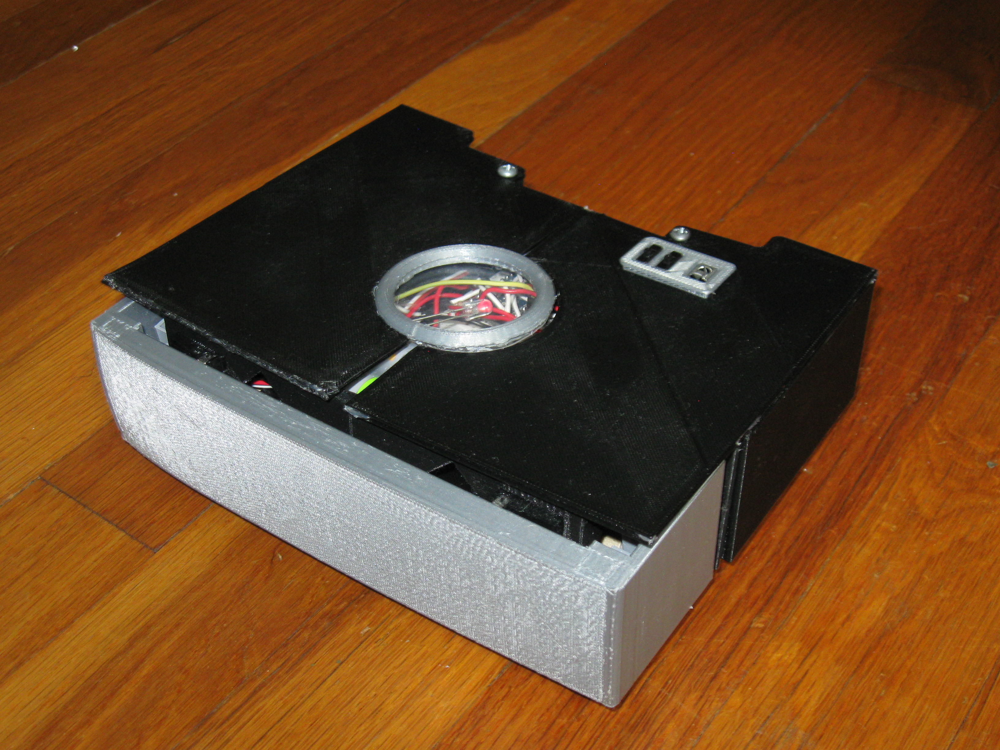

RPR Rag Pushing Robot

RPR was an attempt at a somewhat useful robot. It was intended to be a Roomba like robot that can avoid walls while cleaning a floor. It can clean both autonomously and while being controlled with an infrared remote. The main problem with this design is that the modified servos that drive the wheels aren't very effective at moving the robot's weight. This is mostly due to the fact that they have to overcome the friction of the sweeper. The bumpers also aren't as sensitive as they should be.
RPR was built around 2017, and all of the 3D files were designed in FreeCAD. All of the 3D files are downloadable as both .OBJ and .FCStd FreeCAD files. The wheels are powered by continuous rotation servos, and the whole thing is controlled by an Arduino Nano. The front bumper is equipped with several tactile switches, and there is an IR receiver on the top panel. The whole thing is powered by 6 AA batteries, and there are two power switches on the top. One switch controls power to the Arduino, and the other controls power to the motors.
- Download RPR For 3D printing
- Download RPR editable CAD file (editable with FreeCAD)
- How RPR was Built
- Design and inspiration
- Free Roam Arduino Clean Program